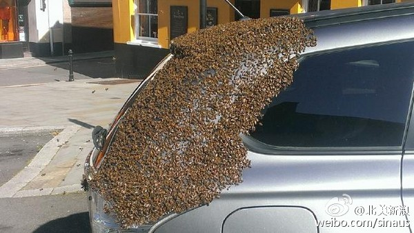

继续比喻的话，蜂后终年关在一个房间里，好吃好喝被供养着，但要不停地生孩子生孩子，每天生一堆孩子。有多少女性会羡慕这样的生活？ //@粉熊的微博:现实版玛丽苏言情小说，每个男人都爱着这个女人，愿意为她舍弃生命！@北美新浪:#环球趣闻#【英国：蜂后被困车内 2万蜜蜂为救驾围攻汽车】豪沃思（Carol Howarth）是一名住在英国威尔斯的妇人，日前她驾车到哈佛威斯特（Haverfordwest）市中心购物，不料发现一群约2万只的蜜蜂紧紧贴在车尾，怎么赶都赶不走，引来路人围观拍照。前来帮忙的养蜂人猜测，或许是蜂后跑进车内，才让蜜蜂大军死缠不放。网页链接